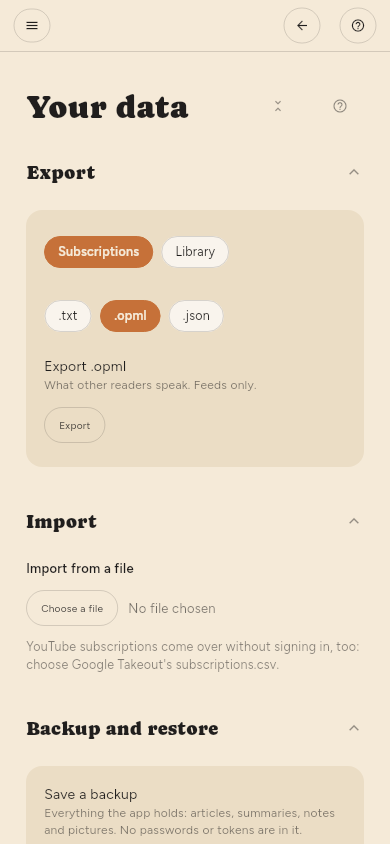

Dove sono conservati i dati
La tua libreria è un unico file SQLite nella cartella dei dati dell’app. Fare il backup di quel file salva tutto: articoli, riassunti, evidenziazioni e ciò che hai letto. Configurazione › Avanzate › I tuoi dati › Backup e ripristino crea la stessa copia come un unico file, senza dover cercare la cartella.
